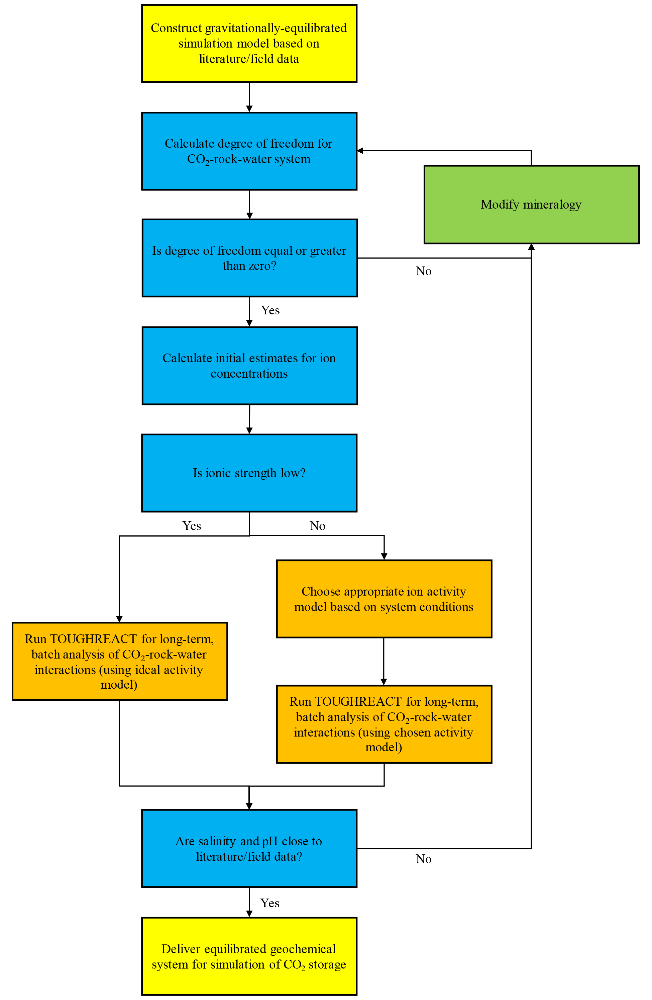
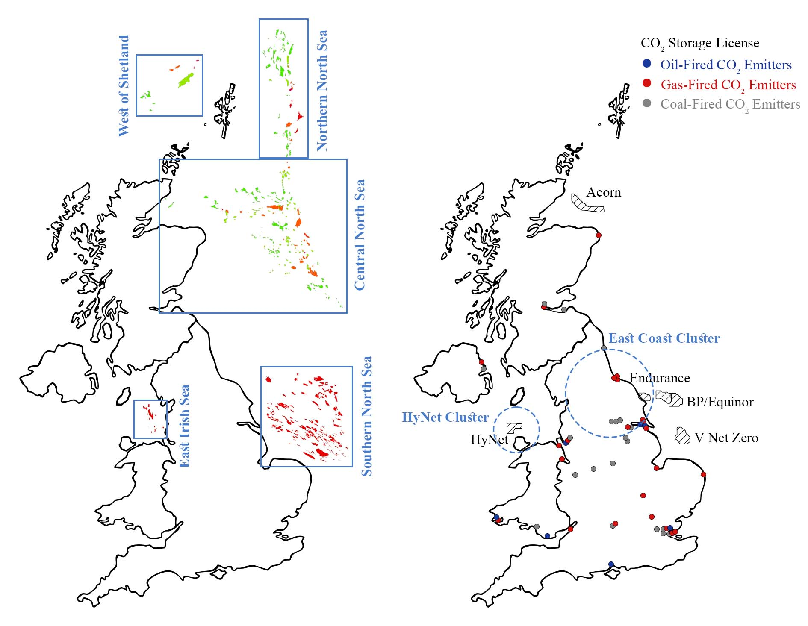

I built this personal website to showcase my work in
The site also demonstrates my web development skills using HTML, CSS, and JavaScript.

Freelance Data Anaylsis Project

Generated 3D time-evolving visualizations of simulation outputs
Delivered a freelance data analysis project with SQL and Power BI
Developed automation pipelines for data processing in Python
Performed inter-simulator sensitivity analysis of CO2 storage predictions
Conducted reactive-transport simulations of geological CO2 storage using CMG and TOUGHREACT
C
SUBROUTINE INPUT
C
C ............................................
C MODULE t2f
C ............................................
C
C-----READ ALL DATA PROVIDED THROUGH THE INPUT FILE.
C-----THIS ROUTINE COMPUTES RELATIVE PERMEABILITIES FOR LIQUID
C AND GASEOUS PHASES.
C
C
implicit real*8 (a-h,o-z)
implicit integer*8 (i-n)
INCLUDE 'flowpar_v4.inc'
C
COMMON/P3/DELX((MNK+1)*MNEL)
COMMON/RPCAP/IRP(MAXMAT),RP(7,MAXMAT),ICP(MAXMAT),CP(7,MAXMAT),
XIRPD,RPD(7),ICPD,CPD(7)
!els12/02/15 add new pcap parameters
common/rpcap2/cpsavpar(6,maxmat),rpsavpar(12,maxmat)
c Added definitions below
double precision sg,repl,repg,sg0
integer*8 nmat,k,nloc
C
SAVE ICALL
DATA ICALL/0/
ICALL=ICALL+1
IF(ICALL.EQ.1) WRITE(11,899)
c 899 FORMAT(6X,'RELP 1.0 25 JANUARY 1990',6X,
c 899 FORMAT(6X,'RELP 1.0 23 November 1994',6X,
c 899 FORMAT(6X,'RELP 1.0 26 July 1995',6X,
!els11/30/15 899 FORMAT(6X,'RELP 1.1 20 March 2009',6X,
899 FORMAT(6X,'RELP 1.11 30 November 2015',6X,
X'LIQUID AND GAS PHASE RELATIVE PERMEABILITIES AS FUNCTIONS',
X' OF SATURATION'/
x47X,'for IRP=7, use Corey-krg when RP(4).ne.0, with Sgr',
x' = RP(4)')
C
SL=1.d0-SG
c GOTO(10,11,12,12,13,14,15,16),IRP(NMAT)
c Added new option 11, from ITOUGH (S. Finsterle)
GOTO(10,11,12,12,13,14,15,16,17,18,19),IRP(NMAT)
10 CONTINUE
C-----LINEAR FUNCTIONS.
C
C CHECK IF INCREMENT NEEDS TO BE ADJUSTED AT LOWER LIQUID CUTOFF.
IF(K.NE.3) GOTO 20
IF((SL-RP(1,NMAT))*(1.d0-SG0-RP(1,NMAT)).GE.0.d0) GOTO 20
C ADJUST INCREMENT.
DELX(NLOC+2)=-DELX(NLOC+2)
SG=SG0+DELX(NLOC+2)
SL=1.d0-SG
20 CONTINUE
C
!els12/02/15 REPL=(SL-RP(1,NMAT))/(RP(3,NMAT)-RP(1,NMAT))
REPL=(SL-RP(1,NMAT))/rpsavpar(1,nmat)
IF(SL.GE.RP(3,NMAT)) REPL=1.d0
IF(SL.LE.RP(1,NMAT)) REPL=0.d0
!els12/02/15 REPG=(SG-RP(2,NMAT))/(RP(4,NMAT)-RP(2,NMAT))
REPG=(SG-RP(2,NMAT))/rpsavpar(2,nmat)
IF(SG.GE.RP(4,NMAT)) REPG=1.d0
IF(SG.LE.RP(2,NMAT)) REPG=0.d0
C
RETURN
C
11 CONTINUE
C-----RELATIVE PERMEABILITY OF PICKENS ET AL.
C
REPG=1.d0
REPL=(1.d0-SG)**RP(1,NMAT)
C
RETURN
C
12 CONTINUE
C-----COREY@S OR GRANT@S CURVES.
C
!els12/02/15 SSTAR=(SL-RP(1,NMAT))/(1.d0-RP(1,NMAT)-RP(2,NMAT))
SSTAR=(SL-RP(1,NMAT))/rpsavpar(1,nmat)
REPL=SSTAR**1.70E0
REPG=0.50E0*(1.d0-SSTAR**1.2)*(1.d0-SSTAR)**0.40E0
IF(SG.GE.RP(2,NMAT)) GOTO 50
REPG=0.d0
REPL=1.d0
GOTO 102
!els12/02/15 50 IF(SG.LT.(1.d0-RP(1,NMAT))) GOTO 102
50 IF(SG.LT.rpsavpar(2,nmat)) GOTO 102
REPL=0.d0
REPG=1.d0
102 CONTINUE
IF(IRP(NMAT).EQ.4) REPG=1.d0-REPL
RETURN
C
13 CONTINUE
C-----BOTH PHASES ARE PERFECTLY MOBILE.
C
REPL=1.d0
REPG=1.d0
C
RETURN
14 CONTINUE
C-----RELATIVE PERMEABILITIES OF FATT AND KLIKOFF (1959), AS REPORTED
C BY K. UDELL (BERKELEY, 1982).
C
SS=0.d0
!els12/02/15 IF(SL.GT.RP(1,NMAT)) SS=(SL-RP(1,NMAT))/(1.d0-RP(1,NMAT))
IF(SL.GT.RP(1,NMAT)) SS=(SL-RP(1,NMAT))/rpsavpar(1,nmat)
REPL=SS**3
REPG=(1.d0-SS)**3
RETURN
C
15 CONTINUE
C-----RELATIVE PERMEABILITY OF VAN GENUCHTEN, SOIL SCI. SOC. AM. J. 44,
C PP. 892-898, 1980.
C
IF(SL.GE.RP(3,NMAT)) GOTO 150
!els12/02/15 SS=(SL-RP(2,NMAT))/(RP(3,NMAT)-RP(2,NMAT))
SS=(SL-RP(2,NMAT))/rpsavpar(1,nmat)
REPL=0.d0
C
c
subroutine hkfpar(T,tk,adh,bdh,bi,bil)
c
C ............................................
C MODULE geochem
C ............................................
c
c
c bhat NaCl (b NaCl = bhat/(2.303RT)) from Table 29 (bi here)
c b Na+Cl- from Table 30 (bil here)
c A and B Debye-Huckel (adh and bdh) from Table 1 (cols. 3 and 4)
c
c Polynomial regression coefficients a, b, c, d, e, and f are
c stored in data statements below to calculate parameters as:
c parameter(T) = a + b*T + c*T + d*T**2 + e*T**3 + f*T**4
c where T is temperature in C.
c
c These are good for the range 0 to 300 C, BUT(!) the data
c available to fit bi and bil did not go down to T = 0 C
c (first point at 25 C) so the extrapolation may not be too good
c below 25 C for bi and bil (A and B data cover the entire range),
c but I checked that the extrapolated bi and bil values below
c 25 C vary smoothly down to 0 C.
c
c Note the following units:
c aft yields adh in kg**0.5 mol**(-0.5)
c bft yields bdh in kg**0.5 mol**(-0.5) Anstrom**(-1)
c bift yields bihat(NaCl) in kg/mol * 1e+3
c bilft yields bil (Na+Cl-) in kg/mol * 1e+2
c
implicit double precision (a-h,o-z)
implicit integer*8 (i-n)
double precision aft(5), bft(5), bift(5), bilft(5)
double precision t,tk,adh,bdh,bi,bil,bihat
c
data aft/0.49276542d+00,0.31857945d-03,0.11628933d-04,
& -0.52038832d-07,0.12633045d-09/
data bft/0.32476341d+00,0.12018502d-03,0.79530646d-06,
& -0.30410531d-08,0.56931304d-11/
data bift/0.26538636d+01,-0.52889569d-02,-0.11009615d-03,
& 0.46820513d-06,-0.11104895d-08/
data bilft/-0.14769091d+02,0.22563951d+00,-0.10225385d-02,
& 0.30349650d-05,-0.35468531d-08/
c
func(a,b,c,d,e,T) = a+(b+(c+(d+e*T)*T)*T)*T
c
SAVE ICALL
DATA ICALL/0/
ICALL=ICALL+1
IF(ICALL.eq.1) WRITE(11,"(
& 6x,'hkfpar 2.1 12 September 2013',
& 6x,'Assigns data for calculation of Debye-Huckel parameters'
& )")
c
adh=func(aft(1),aft(2),aft(3),aft(4),aft(5),T)
bdh=func(bft(1),bft(2),bft(3),bft(4),bft(5),T)
bihat=func(bift(1),bift(2),bift(3),bift(4),bift(5),T)*1.d-3
bi=bihat/(4.57061d0*tk) ![kg cal/mol]
bil=func(bilft(1),bilft(2),bilft(3),bilft(4),bilft(5),T)*1.d-2
c
return
end
c
c-------------------------------------------------------------------------------
c
subroutine dh_hkf81(no_ch,tk2,adh,bdh,bi,bil,str,gamp,gams,
& cs,ct,u2,cpw,xh2o,gampdl,gamsdl,
& mstar,stroot)
c
C****************** Calculate activity coefficient of aqueous species ************
C idryout is for dryout without update activity coefficients 0 and 1 normal, 2, skip
CC
c This routine computes activity coefficients of aqueous species
c and the activity of water using pitzer model or an extended DH model according
c to a user-specified ionic strength threshold and a user option. The extended
c DH model uses equations and parameters given in Helgeson, Kirkham and
c Flowers, 1981, A.J.S. p.1249-1516. Also computes neutral species activities
c from Setchenov equation (Langmuir 1997, Aqueous Environmental
c Geochemistry, Prentice Hall, p. 144).
c Charged species: individual ion activity coefficients calculated from:
c equation 298 (which includes 121, 122, 129, 130, 169, 170 and 297)
c - uses true ionic strenght.
c use bhat NaCl (b NaCl = bhat/(2.303RT)) from Table 29 (bi here)
c use b Na+Cl- from Table 30 (bil here)
c use Rej from Table 3 (input in thermodynamic database as
c a0 variable, but note that values are NOT a0 values)
c use A and B Debye-Huckel (adh and bdh) from Table 1 (cols. 3 and 4)
c caclulate a0 from input Rej values and eq. 125,
c assuming other dominant anion (for cations) is Cl- (rej=1.81 A)
c and cation (for anions) is Na+ (rej=1.91 A)
c
c Activity of water calculated from:
c osmotic coefficient using equation 190 and same parameters
c as above, assuming similar simplifications as done for
c the calculation of activity coefficients, but using
c stoichiometric ionic strength.
c equation 106 relating activity of water to the osm. coef.
c
c Regression coefficients a, b, c, d, e to obtain A, B, bi abd bil
c parameter as a function of temperature were calculated using
c 4th order polynomials as follow:
c f(T) = a + b*T + c*T**2 + d*T**3 + e*T**4
c
c Neutral species: assume gamma = 1 or,
c for weak acids and dissolved gases:
c log(activity coef)=sltout*ionic strength
c where sltout is input in a0 variable as 100+sltout
c For now, no temperature dependence on sltout is assumed as
c the effect is small compared to variation of solubility (K) with temp.
c
implicit double precision (a-h,o-z)
implicit integer*8 (i-n)
include 'flowpar_v4.inc'
include 'chempar_v4.inc'
include 'common_v4.inc'
integer*8 no_ch
integer*8 nprsec,ncp,niis,iis
double precision lambda, lambd2, mstar, mchr
double precision bdhstrt,bdhstr2,bdh3str2,adhstrt
double precision cpgmdms,bistr,bistr2,gamlog
double precision cpion(maqt)
double precision adh,bdh,bi,bil,str,tk2
double precision stroot,stroo2,sum,sum2,str2,summt,capgam
double precision cpw(mpri),xh2o
double precision gamp(mpri),gams(maqx)
cels5/1/14 keep versions that don't have to be logged
double precision gampdl(mpri),gamsdl(maqx)
double precision cs(maqx),u2(mpri),ct(mtot)
!els4/5/16 double precision gamln,gsalt,sltout,cpwmax
double precision gamln,gsalt,sltout
parameter(CC=-1.0312d0,FF=0.0012806d0,GG=255.9d0,EE=0.4445d0,
+ HH=-0.001606d0)
c
c
c-22-March-2000------ salting out effect, Wolery's EQ3NR Eq. (91)
c
SAVE ICALL
cpitz SAVE gam
DATA ICALL/0/
ccc data amwh2o/18.0152d0/
ICALL=ICALL+1
IF(ICALL.EQ.1) then
WRITE(11,899)
!els4/5/16 899 FORMAT(6X,'dh_hkf81 2.2 1 May 2014',6X,
899 FORMAT(6X,'dh_hkf81 2.3 5 Apr 2016',6X,
X'Calculate activity coefficient of aqueous species')
c
endif
C
cels5/22/12 moved initialization outside of icall loop
c
c ns-jan08 Initializes gammas
cels5/1/14 initial dlog of gamma
do i=1,npri+1 !ns12/2017 add 1 to store gamma for water
gamp(i) = 1.d0
gampdl(i) = 0.d0
enddo
c
do i=1,naqx
gams(i) = 1.d0
gamsdl(i) = 0.d0
enddo
c
c hkf parameters at given temperature
c call moved to routine assign to avoid recalc at all iterations
c adh in kg**0.5 mol**(-0.5) (this is A Debye-Huckel)
c bdh in kg**0.5 mol**(-0.5) Angstrom**(-1) (this is B Debye-Huckel)
c bi in kg/mol * 1e+3 (this is bhat (NaCl) )
c bil in kg/mol * 1e+2 (this is bil (Na+ Cl-) )
c
no_ch=0
cels9/29/09 not used naqt=npri+naqx
naqt=npri+naqx !ns12/2017 now needed
c
c
c ---calculate ionic strength and other global concentrations
c all concentrations must be in molal scale (mol/kgH2O)
sum=0.d0 !to compute true ionic strength
sum2=0.d0 !to compute stoichiometric ionic str
mstar=0.d0 !total solute in solution
mchr=0.d0 !total solute excluding neutral species
!els4/5/16 not used now cpwmax = 0.d0
c primary species contribution
cns3/2010 do i=1,npri
do i = 1,npaq !skip sorption species
ct(i)=cpw(i)
!els12/21/15 if(ct(i).lt.1.0d-16) ct(i)=0.0d0
!test01/28/16 if(ct(i).lt.1.0d-30) ct(i)=0.0d0
cns2/17/2012 if(i.ne.nw.and.i.ne.ne.and.NoTrans(i).ne.2) then
!els01/28/16 Modified for multicomponent diffusion options
if(i.ne.nw.and.i.ne.ne.and.NoTrans(i).lt.2) then
cels5/1/08 zi2 = z(i)*z(i)
cels11/29/2011 zi2 = zsqi(i)
cels11/29/2011 sum=sum+zi2*cpw(i)
cels11/29/2011 sum2=sum2+zi2*u2(i)/xh2o
sum=sum+zsqi(i)*cpw(i)
sum2=sum2+zsqi(i)*u2(i)/xh2o
mstar=mstar+cpw(i)
if(z(i).ne.0.d0) mchr=mchr+cpw(i)
cpion(i)=cpw(i)
cels8/23/13 test for ionic strength breaker
!els4/5/16 not used now if(cpwmax.lt.cpw(i))cpwmax=cpw(i)
endif
enddo
c secondary species contribution
do i=1,naqx
nprsec = npri+i
ct(nprsec)=cs(i)
cels6/25/08 this was a bug if(ct(i).lt.1.0d-16) ct(i)=0.0d0
!els12/21/15 if(ct(nprsec).lt.1.0d-16) ct(nprsec)=0.0d0
!test01/28/16 if(ct(nprsec).lt.1.0d-40) ct(nprsec)=0.0d0
cels5/14/08 sum=sum+z(nprsec)*z(nprsec)*cs(i)
sum=sum+zsqi(nprsec)*cs(i)
mstar=mstar+cs(i)
if(z(nprsec).ne.0.d0) then
mchr=mchr+cs(i)
c total concentrations excluding neutral species
ncp=ncps(i)
do n=1,ncp
j=icps(i,n)
cpion(j)=cpion(j)+stqs(i,n)*cs(i)
enddo
endif
enddo
if(sum.lt.0.d0) sum=0.d0
str=0.5d0*sum
c
cels11/6/12 need to print something out so that we know ionic strength is exceeded
ccc if(str.gt.stimax) then
ccc no_ch=1
ccc if(str.gt.stimax)write(32,404)str,' exceeds max ionic strength',
ccc + ' cpwmax= ',cpwmax,' xh2o= ',xh2o
!!!
!!!
!!!!test if(str.gt.stimax)no_ch=1
!!!!test if(str.gt.stimax)return
!! now set true ionic strenth to maximum value to force convergence
str = dmin1(str,stimax)
!!
cels8/23/13 404 format(1x,f10.6,a27)
!els6/25/15 404 format(1x,f10.6,a27,a9,e12.6,a7,e12.6)
!els3/22/16 404 format(1x,f10.6,a27,a9,es12.6,a7,es12.6)
ccc endif
c
cns09/26/2012 str2=str
cels6/27/08 if(sum2.gt.0.d0) str2=0.5d0*sum2
cels6/27/08 stroot=dsqrt(str)
cels6/27/08 stroo2=dsqrt(str2)
cns09/26/2012 if(sum2.gt.0.d0)then
cns09/26/2012 str2=0.5d0*sum2
cns09/26/2012 stroot=dsqrt(str)
cns09/26/2012 stroo2=dsqrt(str2)
cns09/26/2012 else
cns09/26/2012 stroot=dsqrt(str)
cns09/26/2012 stroo2=stroot
cns09/26/2012 endif
if(str.le.0.d0) str=1.d-20
stroot=dsqrt(str)
!els12/21/15 str2=str
!els12/21/15 stroo2=stroot
if(sum2.gt.0.d0) then
str2=0.5d0*sum2
!! now set stoichiometric ionic strenth to maximum value to force convergence
str2 = dmin1(str2,stimax)
stroo2=dsqrt(str2)
!els12/21/15 moved into if block, since if block was already being done
else
str2=str
stroo2=stroot
endif
c
!!
c Conversion factor for molality scale (from eq. 122, 169)
c Note, this factor turns out equal to log(H2O mole fraction)
c D-H yields gamma for mole fraction scale convention, we
c use molality scale convention, therefore needs conversion
!els01/14/16 capgam=-dlog10(1.d0+0.01801528d0*mstar)
capgam=-dlog10(1.d0+0.018015d0*mstar)
c
cels10/14/09 not used if (idryout.eq.2) goto 120 !skip the activity coefficient calculation in case of dryout and I>stimax, aw<0.2
c
c Absolute Born coeff. of H+
c omegh=1.66027d+5*z(nh)*z(nh)/a0(nh)
c
c ---activity and osmotic coefficients
c
c-----------------------------------------------------------
c----- Pitzer activity coefficient model ns12/2017
c-----------------------------------------------------------
if(mopr(21).gt.0) then !pitz
cns08/2016 move call to pitz_tran out of iterations
call pitz(mstar,str,stroot,ct,gamp,gams,gampdl,gamsdl)
c--------------------------------------------------------------------
c ---------HKF Activity coefficient model
c--------------------------------------------------------------------
else !DH
summt = 0.d0
cels6/25/08 added tmp vars
bdhstrt = bdh*stroot
bdhstr2 = bdh*stroo2
bdh3str2 = bdh*bdh*bdh*str2
!els01/14/16 cpgmdms = capgam/(0.0180153d0*mstar)
cpgmdms = capgam/(0.018015d0*mstar)
bistr = bi*str
bistr2 = bi*str2
adhstrt = adh*stroot
cels2/8/2012 initialize lambda
lambda=1.d0
lambd2=1.d0
cels6/25/08 revised loop structure
c.... Primary species
cns3/4/2010 do i=1,npri
do i=1,npaq
cels5/22/12 already set to 1 above gamp(i)=1.0d0
cels6/26/08 rex=1.81d0
cels6/26/08 if(z(i).lt.0.d0) rex=1.91d0
cels11/29/11 zi2 = zsqi(i)
cels6/26/08 azero = 2.d0*(a0(i) + zabsi(i)*rex)/(zabsi(i)+1.d0)
cels2/8/2012 move down lambda=1.d0+bdhstrt*azero(i)
cels2/8/2012 move down lambd2=1.d0+bdhstr2*azero(i)
c
if(z(i).ne.0.d0) then
lambda=1.d0+bdhstrt*azero(i)
lambd2=1.d0+bdhstr2*azero(i)
cels6/26/08 omega = 1.66027d+5*zi2/a0(i)
cels6/25/08 gamlog=-adh*zi2*stroot/lambda + capgam +
cels6/25/08 & (omega*bi*str + (bil - 0.19d0*(zabsi(i)-1.d0))*str)
cels11/29/11 gamlog=-adhstrt*zi2/lambda + capgam +
gamlog=-adhstrt*zsqi(i)/lambda + capgam +
& (omegahkf(i)*bistr + (bil - zabterm(i))*str)
cels6/26/08 & (omega*bistr + (bil - 0.19d0*(zabsi(i)-1.d0))*str)
c
gamp(i)=10.d0**gamlog !activity coef.
cels5/1/14 keep versions that don't have to be logged
gampdl(i)=gamlog
cels6/25/08 & adh*zi2 / (azero*azero*azero*bdh*bdh*bdh*str2)
cels6/25/08 & + capgam/(0.0180153d0*mstar)
cels6/25/08 & - 0.5d0*(omega*bi*str2 +
cels6/25/08 & (bil-0.19d0*(zabsi(i)-1.d0))*mchr*0.5d0)
cels11/29/11 summt=summt + cpion(i) * (
cels11/29/11 & adh*zi2 / (azero3(i)*bdh3str2)
summt=summt + cpion(i) * (
& adh*zsqi(i) / (azero3(i)*bdh3str2)
& * (lambd2- 1.d0/lambd2 - 2.d0*dlog(lambd2))
& + cpgmdms - 0.5d0*(omegahkf(i)*bistr2 +
& (bil-zabterm(i))*mchr*0.5d0)
& )
else
if(a0(i).gt.100.d0) then
sltout=a0(i)-100.d0 !read in as sltout + 100 (flag)
gamlog=sltout*str
if(i.ne.nw) then
gamp(i)=10.d0**gamlog !activity coef.
cels5/1/14 keep versions that don't have to be logged
gampdl(i)=gamlog
endif
endif
endif
enddo
c... Secondary species
do i=npri+1,npri+naqx
inpri = i-npri
cels5/22/12 already set to 1 above gams(inpri)=1.d0
cels6/26/08 rex=1.81d0
cels6/26/08 if(z(i).lt.0.d0) rex=1.91d0
cels11/29/11 zi2 = zsqi(i)
cels6/26/08 azero = 2.d0*(a0(i) + zabsi(i)*rex)/(zabsi(i)+1.d0)
cels2/8/2012 move down lambda=1.d0+bdhstrt*azero(i)
cels2/8/2012 move down lambd2=1.d0+bdhstr2*azero(i)
c
if(z(i).ne.0.d0) then
lambda=1.d0+bdhstrt*azero(i)
lambd2=1.d0+bdhstr2*azero(i)
cels6/26/08 omega = 1.66027d+5*zi2/a0(i)
cels6/25/08 gamlog=-adh*zi2*stroot/lambda + capgam +
cels6/25/08 & (omega*bi*str + (bil - 0.19d0*(zabsi(i)-1.d0))*str)
cels11/29/11 gamlog=-adhstrt*zi2/lambda + capgam +
gamlog=-adhstrt*zsqi(i)/lambda + capgam +
& (omegahkf(i)*bistr + (bil - zabterm(i))*str)
cels6/26/08 & (omega*bistr + (bil - 0.19d0*(zabsi(i)-1.d0))*str)
c
c secondary charged species
gams(inpri)=10.d0**gamlog !activity coef.
cels5/1/14 keep versions that don't have to be logged
gamsdl(inpri)=gamlog
c ---neutral species
else
if(a0(i).gt.100.d0) then
sltout=a0(i)-100.d0 !read in as sltout + 100 (flag)
gamlog=sltout*str
if(i.ne.nw) then
gams(inpri)=10.d0**gamlog !activity coef.
cels5/1/14 keep versions that don't have to be logged
gamsdl(inpri)=gamlog
endif
endif
endif
enddo
c
c activity of water (Note: value of mstar here will
c strongly affect the value of the osmotic coefficient but
c does not affect the activity of water because mstar
c cancels out in the final expression)
osmo = -2.303d0*summt/mstar
c **note: for water, gamp is activity, NOT the coefficient!
!els12/21/15 changed for consistency of 18.015 g/mol in database gamp(nw)=dexp(-osmo*mstar/55.50837d0)
!els01/13/16 gamp(nw)=dexp(-osmo*mstar/55.5093d0)
gamp(nw)=dexp(-osmo*mstar/rmh2o)
cels5/1/14 keep versions that don't have to be logged
gampdl(nw) = dlog10(gamp(nw))
c
C---------------------------
cels6/26/08 Revised salting out, so calculations are in readtherm_hkf
if(nis.gt.0)then
gamln=(CC+FF*tk2+GG/tk2)*str - (EE+HH*tk2)*(str/(str+1.0d0))
gsalt=dexp(gamln)
do niis = 1, nis
iis = indx_so(niis)
cels5/1/14 keep versions that don't have to be logged
if(iis.le.npri)gamp(iis)=gsalt
if(iis.le.npri)gampdl(iis)=dlog10(gsalt)
if(iis.gt.npri)gams(iis-npri)=gsalt
if(iis.gt.npri)gamsdl(iis-npri)=dlog10(gsalt)
enddo
endif
c
c
endif !mopr21.eq.0 gt.0 for Pitzer model ns12/2017
cns12/2017 moved these statements here
c activity coeficient of the electron
if(ne.gt.0) gamp(ne)=1.d0
cels5/1/14 keep versions that don't have to be logged
if(ne.gt.0) gampdl(ne)=0.d0
c activity coefficient of the primary adsorbed species
if(nd.gt.0) gamp(nd)=1.d0
cels5/1/14 keep versions that don't have to be logged
if(nd.gt.0) gampdl(nd)=0.d0
return
end
c
Modified and extended the TOUGHREACT source code in Fortran
TOUGHREACT is a non-isothermal, multi-component, multi-phase reactive-transport simulator that can be used for the simulation of subsurface hydrological and biogeochemical environments, including geothermal systems, geological CO2 storage, and environmental remediation. The simulator mathematically models both batch reaction and 3D reactive flow using different ion activity models. Its reactive module includes many geochemical processes, particularly mineral precipitation and dissolution under equilibrium and/or kinetic constraints. However, TOUGHREACT does not natively involve the ideal activity model for geochemical reactions and support tabular or functional input for relative permeability. To overcome these limitations, its FORTRAN source code was modified through subroutines t2f_v4.f for relative permeability and geochem_v4.f for activity model in TOUGHREACT version 4.13. This modification enables aligning its output with CMG-GEM that is a commercial simulator for compositional, chemical, and unconventional reservoir modelling, even though it does not support batch reaction, and its source code is not available for any modification.

Developed a synthesis workflow for geochemical initialization of aquifers
Ensuring the safe, long-term CO2 storage in geological formations requires accurate modelling of geochemical reactions between CO2-saturated water and rock-forming minerals. Reactive-transport simulators represent these processes over extended timescales, but geochemical equilibrium must first be established, analogous to gravitational equilibrium in pressure initialization. Therefore, I have integrated geochemical modelling with thermodynamic equilibrium constraints to develop a practical workflow for chemically initializing geological formations prior to CO2 injection, leading to a peer-reviewed publication. The workflow uses ion activity models to synthesize equilibrated CO2-rock-water systems for a non-negative degree of freedom while deliberately engineering the mineralogy to ensure model predictions of salinity and pH are broadly consistent with laboratory values. The significant discrepancies between activity-model-based equilibrium concentrations and short-term laboratory values highlight the importance of such a synthesis workflow, as laboratory analyses constrained by short experimental timescales may not reflect true long-term equilibrium conditions.

Created GIS-based spatial distribution maps for the potential CO2 storage sites
The first step in evaluating any CCS project is to identify storage systems capable of securely containing CO2 over extended timescales. Among the available options, geological storage remains the most technically and economically viable because of the proven long-term containment of natural hydrocarbons in subsurface formations, the abundance of geological data from oil and gas exploration, and the potential for reusing existing infrastructure. Following the development of a four-stage site-selection workflow, I gathered publicly accessible GIS-based datasets to basically evaluate potential CO2 storage sites across the UK, leading to spatial distribution maps later published in 3rd International Conference on Energy and Sustainable Futures (ICESF).